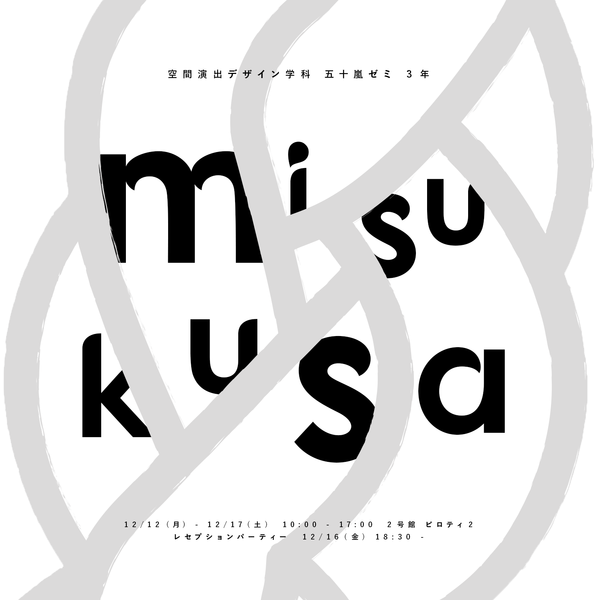
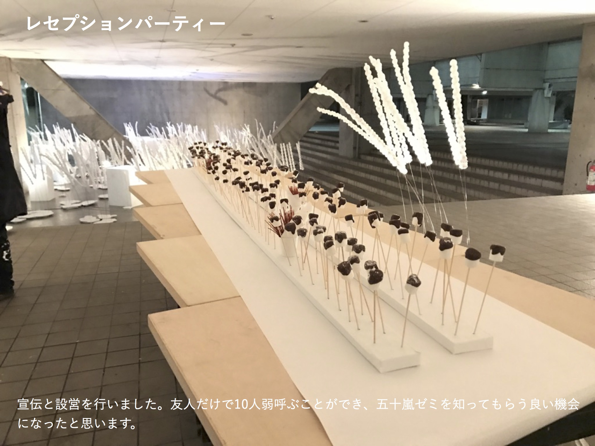
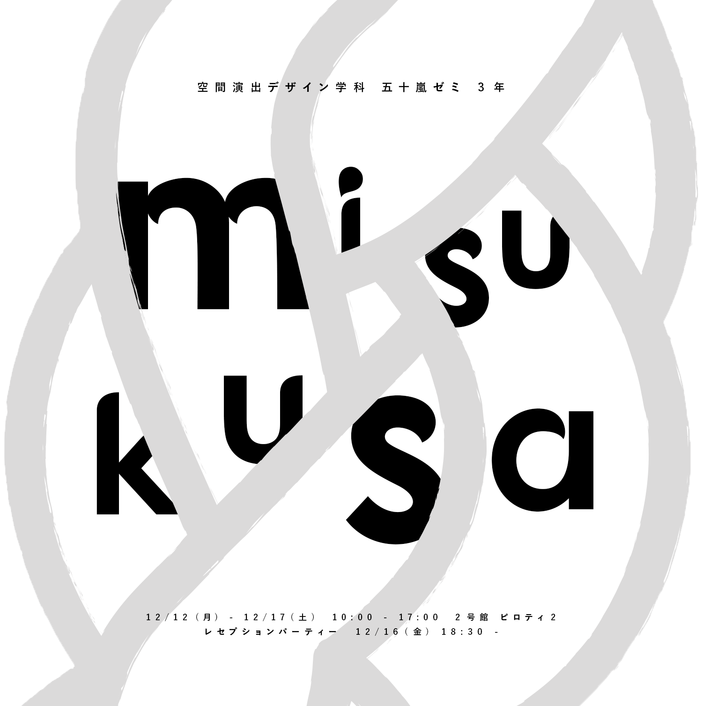
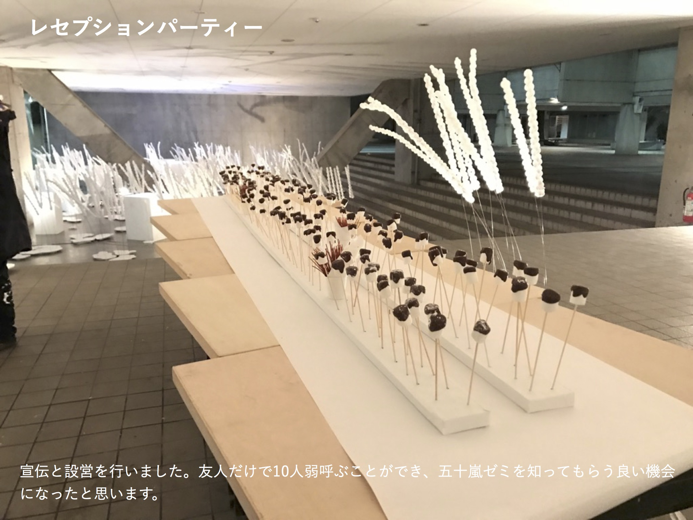
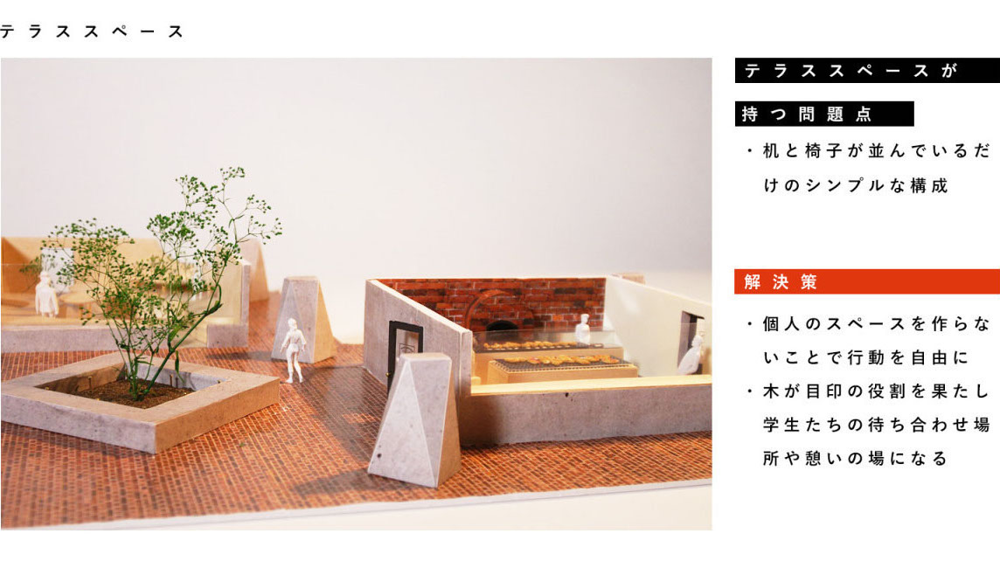
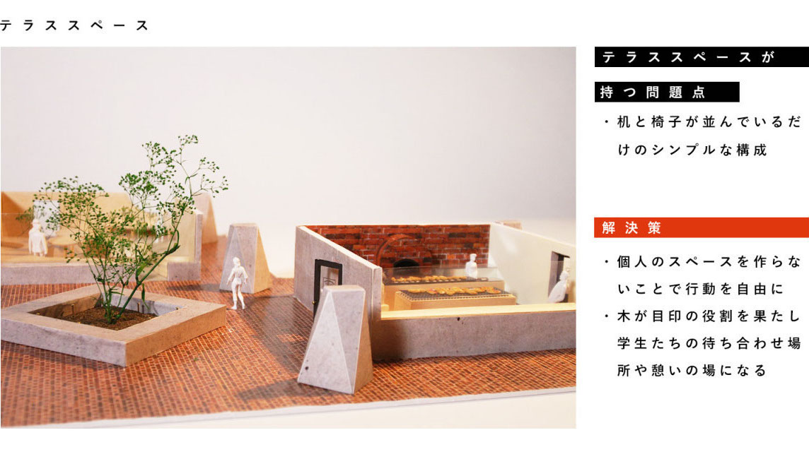

HARUKA ITO
 

 

雑誌をshopに変換せよ - STUDIO VOICE -
STUDIO VOICE は20代向けのジャンルレスなカルチャーシーンを紹介する雑誌です。毎号異なる切り口の特集や斬新な誌面デザイン、メジャーとマイナーをミックスさせた文化の発信によって、日本のカルチャーシーンを牽引してきました。
“今”という視点から現在のカルチャーを捉え、参加するクリエイターや作品をフラットに取り上げることで「何にフォーカスし、何を知るべきか」という雑誌のコンセプトそのものをshopで伝えるようと思い制作したのがこの VOICE OF STUDIO です。雑誌を読まない世代の共感を目指すべくSNSを利用し発信する場を制作しました。
1F LOUNGE
2F GALLRY & SHOP & FREE SPACE
2016.08

TRIP
駅近に建てる店舗のデザインの課題で、ビジネスマンが仕事帰りや飲み会帰りに、ただ寝泊まりするだけではなく、海外に行ったようなワクワク感を生み、次の日の仕事への活力となるような場所を提案しました。
宿泊者に旅に来た気分を体験してもらえるよう、各部屋ごとに旅先のホテルをコンセプトにデザインし、コミュニケーションのないひとり泊だからこそ、プライベートの時間を大切にしてもらいつつも、宿泊者同士が互いを刺激しあえるような交流が行える共用キッチンを制作しました。
(グループで渋谷の実地調査とビジネスマンへのアンケート調査を実施)
2016.06

グリヴォア帝国
セノグラフィの課題で架空の国と物語を設定し、レーシングカーと衣装、マップを制作しました。
-------------------------------------------------------------------------------------------------------------------------------------
レース…竹の国で行われる国別対抗戦。架空の国がそれぞれの目的のために優勝を目指して出場する。
グリヴォア帝国…地図には表記されていないが、地球上の北半球にある島国。1年の1/3以上が雨。冷帯湿潤気候。19世紀までは外国船が行き来し、麻薬とされるキノコで貿易国として栄えていた。19XX年、新種のキノコが発見され、そのキノコが原因とされる奇病(コルヴァシエニ病：全ての物質に寄生し、腐敗させる。生物に寄生した場合、意志を持つことがある。致死率100%。)が流行した。環境汚染から人口が爆発的に減少。国外への感染の危険性があったため、世界から切り離され、孤立した国となった。レース参加目的は、表の理由が優勝し知名度を取り戻し、また地図に載ること。裏の理由が他国に繁殖して世界征服すること。
-------------------------------------------------------------------------------------------------------------------------------------
という設定のもと、車を操縦し演技をしました。
2015.12 グループ制作(4人)


場に着生する
「場に着生する」という課題と向き合った時に、武蔵美の蔦の吸着跡に着目し、空間デザインを行いました。
蔦の吸着跡と私たちのシワ・シミ・ほくろ・アザ・傷跡は、同じ生きた印だと感しました。ファンデーションやコンシーラーなどで生きた印を隠して美しくありたいという気持ちは、人間的思考からなる行為です。それを武蔵美に施すことは自己投影であり、自分たちの意思が場に着生していることを表現しました。
蔦の葉の形のトレーシングペーパーで吸着跡を覆い、生きた証を隠しきれない生々しい様と、偽物の葉が風になびく様子で人間性を表現しました。
2015.08 グループ制作(4人)

収攬の巣
『主観的な巣』という課題で、「主観的な人の心をとらえる形」を効果的に見せることができる階段に設置しました。
それを意識しながら階段を上る行為は巣にとらわれている状態であり、作品を取り巻く空間を収攬の巣として表現しました。
限られた材料のなかで制作物や演出をどう工夫していくか学ぶことができました。
2014.06 グループ制作(3人)